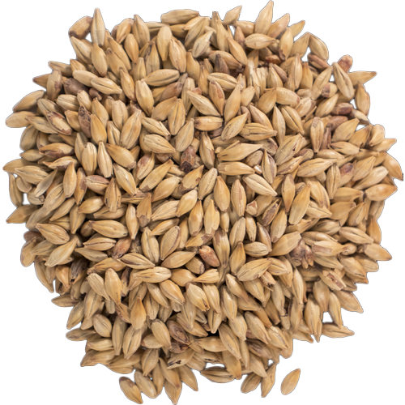
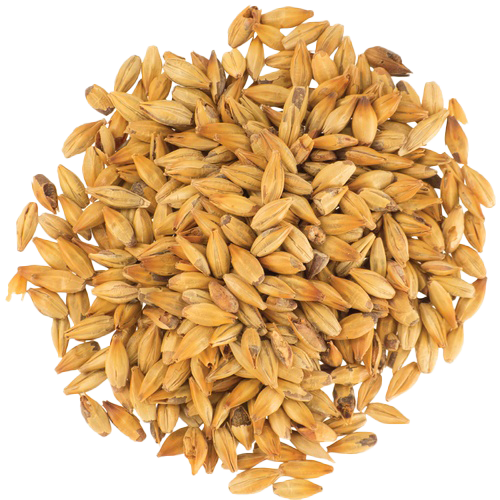
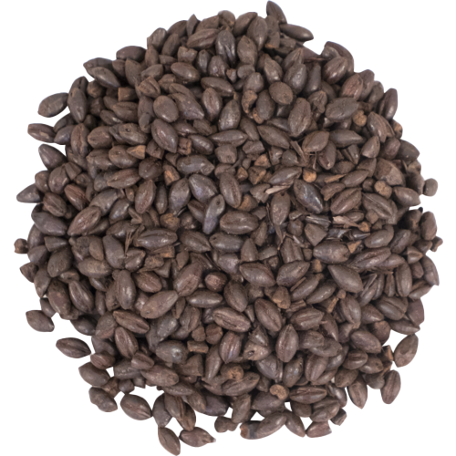
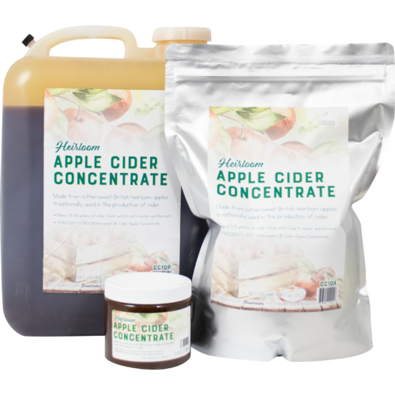
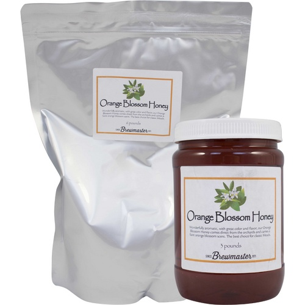

🌾 Fermentables & Raw Ingredients

Viking Malt
2.1-3.2 °L - Viking Malt, malty, sweet and nutty notes. Made from 2-row spring barley. Ideal malt for ales and special lagers. Suitable for subtle color correction of regular lagers.

CaraRed
16 - 23 L - CaraRed® is a drum-roasted caramel malt derived from 2-row barley. This caramel malt helps create a full body and provides a deep red color. Notes of caramel, honey and biscuit. Can be up to 25% of total grist.

CaraMunich
31-38 °L - CaraMunich® is a drum-roasted caramel malt derived from 2-row barley. This caramel malt helps create a full body and provides dark amber to copper hues. Notes of caramel and biscuit. Can be up to 10% of total grist.

Black Roasted Barley Malt
407 °L - Briess Malting - Contributes color and rich, sharp flavor characteristic of Stouts and some Porters. Impacts foam color.

Chocolate Malt
350 L - Rich roasted coffee, cocoa — Brown hues; use in all styles for color. Great for the production of most dark beers, especially porters.
🌿 Herbs, Preservatives & Botanicals

Hallertau Mittelfruh Pellet Hops
All hops are packaged in oxygen, light and moisture barrier bags. They are purged with nitrogen and stored cold to optimize freshness. Resealable packages feature a tear notch and zipper.

Lemondrop™ Pellet Hops
The name truly says it all. Lemondrop™ offers a "unique lemon-citrus character with a pleasant aroma." The bright citrus and subtle herbaceous notes are perfect for sessionable beers. While ales tend to bring out her sweeter side, Lemondrop™ is delicate and refined enough for quality lagers. 5%-7% typical Alpha Acid content.

British Bittersweet Apple Cider Concentrate
Made from traditional UK Cider Apples. High in tannins and acidity. Blend or backsweeten with standard apple juice to balance. Dilute in 6 parts water to 1 part concentrate to reconstitute original juice; Approx 1.040 SG, 5.2% ABV.

OrangeBlossomHoney
Our Orange Blossom honey should be used for your very best creations. It comes directly from orange tree orchards in America and has the unmistakable floral aroma of orange blossoms. By far, one of our favorite honey for meads. Please note: Honey that gets cold often becomes crystalized but this has no detrimental effect on the overall quality. It can still be used in its crystalized form or returned to liquid by gently heating it back up in a warm water bath.
🏺 Fermentation Vessels & Storage

Blown-Glass Fermentation Vault
Heavy, thick-walled glass aging vessels. Allows a cellar-master to monitor the clarity and settling of sediment without opening the seal.
Reinforced Cellar-Master’s Tub
Thick, industrial-grade storage barrel with a bottom spigot. Built with heavy handles to survive a rough cellar floor.
Ration Bottles (Thick Amber Glass)
Dark, heavy glass flasks designed to block out sunlight and prevent your stored ale from skunking. Case of 24.
Whittled Oak Bungs & Wooden Stoppers
High-grade tapered wood corks to firmly hammer into the mouths of your aging glass jugs or bottles.
🛠️ Hearth & Brew Day Gear
Blacksmith’s Heavy Boil Kettle
Thick-bottomed, heavy-gauge steel vessel built to sit directly over high heat or outdoor firepits without scorching.
The Inspector’s Gravity Float
A weighted glass tool used to measure the density and sugar content of the liquid. Necessary for calculating final proof.
Heavy Stirring Oar
Long, solid steel paddle to constantly keep thick honeys and heavy extracts moving so they do not burn on the iron bottom.
Gas-Release Trapping Valve
A simple water-trap mechanism. Allows the natural pressure of fermenting gas to safely vent while blocking sour air and flies.
Scrubbing Bristles & Wire Scourers
Long, flexible wire brushes designed to curve inside the necks of glass jugs to scrape away dried yeast cake and mold.